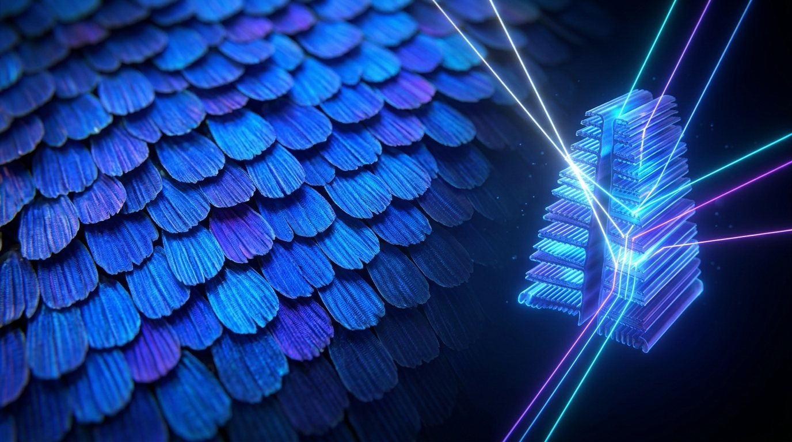

The apple carries reflectance properties. The color is the meeting. A Quest for the Big TOE, Element 1, Reality is Fundamentally Relational
The book says color is not in the object and not in the light, but in the meeting of the two inside a visual system. That is easy to agree with and hard to feel. Here is the meeting made visible, twice: once where your own eye supplies the color, and once where the object makes color from structure, with no pigment at all.
This Earth is painted in the wrong colors, an orange sea and pink land. Stare at the × at its center, hold still, and let the timer run. When the paint is taken away, the sea turns blue and the land turns green. The screen never held those colors. The meeting happened in you.
Why it happens: the color-sensing cells in your eye tire where they are held on one hue, so when the hue is removed the balance tips to its opposite, red against green, blue against yellow. The brain reads that imbalance as the opposite color, in the shape you were fixating. This is the negative afterimage, a standard result of opponent-process vision (Hering). How strong it looks varies from person to person and screen to screen, so take your own impression as a demonstration, not a measurement.
The afterimage is color supplied by the viewer. These are colors made by shape, where the material holds no matching pigment at all. As the book puts it: remove the structure and the color vanishes completely.

The wings hold no blue pigment. Microscopic ridges stacked like roof tiles cancel most wavelengths and reflect blue back out. Crush the structure and the blue is gone.
Structural color by thin-film interference (established optics). Image: illustration.There is no blue pigment in any human eye. Blue eyes carry little pigment in the front layer, so the fine tissue scatters light and the eye reads as blue, the same physics that makes the sky blue.
Tyndall / Rayleigh scattering in the iris stroma (established).The hairs are not white. They are clear and hollow, and they scatter light so the coat looks white against the ice. The skin underneath is black, to soak up what warmth gets through.
Scattering by unpigmented, translucent guard hairs (established).The through-line is the book's: color is not a fixed label on a thing. It is an event between light, matter and a nervous system, a relationship rather than a possession, which is what Element 1 means by a reality that is fundamentally relational. Read the passage on how color is made →